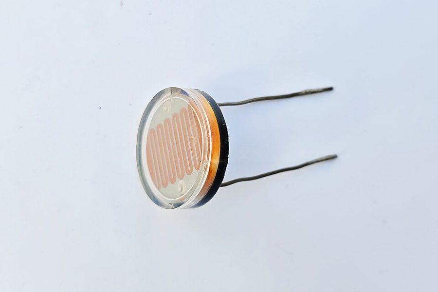

Automação inteligente com Arduino
Três protótipos desenvolvidos e simulados no Tinkercad, integrando sensores e atuadores para transformar leituras do ambiente em decisões automáticas.

Visão geral do projeto
O trabalho simula a rotina de um desenvolvedor júnior em uma empresa de automação e integração de sistemas de Santa Catarina, responsável por implementar protótipos funcionais em bancada, com foco em confiabilidade e rastreabilidade do comportamento do sistema.
Como o setor precisa validar a lógica de controle antes de levá-la a campo, os três sistemas foram prototipados e testados em simulação no Tinkercad, transformando sinais de sensores — presença, luminosidade, distância, temperatura e umidade — em decisões automáticas que reduzem falhas operacionais.
Os três sistemas
- Iluminação Inteligente — presença + luminosidade, com brilho variável por intensidade.
- Estacionamento Inteligente — ultrassom + potenciômetro, com alerta visual progressivo.
- Ambiente Inteligente — temperatura + umidade, com indicadores e envio de dados pelo Monitor Serial.
Vídeo de demonstração no Tinkercad
Circuitos montados no Tinkercad, testes em diferentes cenários e explicação da lógica de cada sistema.
Se o vídeo não carregar, assista direto no YouTube: youtube.com/watch?v=HsdnNG-Vimo
Arduino físico em sala de aula
Além da simulação, os circuitos foram montados com o Arduino de verdade, em bancada, durante as aulas. Os vídeos abaixo mostram as montagens funcionando.
Iluminação Inteligente
O LED só acende quando há alguém no ambiente e a luz natural está insuficiente.
Componentes
- Arduino Uno
- LED
- Resistor 220 Ω
- Sensor PIR (presença)
- LDR (luminosidade)
- Resistor 10 kΩ
Ligações
| Componente | Pino Arduino |
|---|---|
| Sensor PIR — saída | D2 (digital) |
| LDR — divisor com 10 kΩ para o GND | A0 (analógico) |
| LED — anodo com resistor 220 Ω | D9 (PWM) |
Regras de funcionamento
| Presença | Luminosidade | LED |
|---|---|---|
| Detectada | Ambiente escuro | LIGADO |
| Detectada | Ambiente claro | DESLIGADO |
| Nenhuma | Qualquer | DESLIGADO |
A0 cresce conforme a luz aumenta. Por isso o ambiente é considerado escuro quando o valor fica abaixo do limiar definido em LIMIAR_ESCURO.
Circuito no Tinkercad
circuito1.png na pasta img/circuitos — a imagem aparece aqui automaticamente.
Código do Arduino
/* ============================================================
DESAFIO 1 - ILUMINACAO INTELIGENTE
Sensor de presenca (PIR) + Sensor de luminosidade (LDR)
Logica:
presenca + ambiente escuro -> LED ligado
presenca + ambiente claro -> LED desligado
sem presenca -> LED desligado
============================================================ */
const int PINO_PIR = 2; // saida digital do sensor de presenca
const int PINO_LDR = A0; // divisor de tensao com o LDR
const int PINO_LED = 9; // LED (pino PWM, usado na versao extra)
// Valor de referencia da luminosidade (0 a 1023).
// Abaixo deste valor o ambiente e considerado ESCURO.
const int LIMIAR_ESCURO = 400;
// Evita que o LED pisque com oscilacoes proximas do limiar
const int HISTERESE = 40;
bool ambienteEscuro = false;
void setup() {
pinMode(PINO_PIR, INPUT);
pinMode(PINO_LED, OUTPUT);
Serial.begin(9600);
Serial.println("Sistema de iluminacao inteligente iniciado.");
}
void loop() {
// ---------- 1) LEITURA DOS SENSORES ----------
bool presenca = (digitalRead(PINO_PIR) == HIGH);
int luz = analogRead(PINO_LDR);
// ---------- 2) INTERPRETACAO COM HISTERESE ----------
if (ambienteEscuro) {
if (luz > LIMIAR_ESCURO + HISTERESE) ambienteEscuro = false;
} else {
if (luz < LIMIAR_ESCURO - HISTERESE) ambienteEscuro = true;
}
// ---------- 3) DECISAO ----------
bool ligarLed = (presenca && ambienteEscuro);
digitalWrite(PINO_LED, ligarLed ? HIGH : LOW);
// ---------- 4) RASTREABILIDADE (Monitor Serial) ----------
Serial.print("Presenca: ");
Serial.print(presenca ? "SIM" : "NAO");
Serial.print(" | Luz(A0): ");
Serial.print(luz);
Serial.print(" | Ambiente: ");
Serial.print(ambienteEscuro ? "ESCURO" : "CLARO");
Serial.print(" | LED: ");
Serial.println(ligarLed ? "LIGADO" : "DESLIGADO");
delay(300);
}Extra — brilho proporcional à escuridão
Mantendo a mesma regra de decisão, o LED passa a ter intensidade variável: quanto mais escuro o ambiente, mais forte a iluminação artificial. Basta substituir o bloco de decisão do código acima.
// ---------- 3) DECISAO COM INTENSIDADE VARIAVEL ----------
int brilho = 0;
if (presenca && ambienteEscuro) {
// Quanto MENOR a leitura do LDR (mais escuro), MAIOR o brilho.
brilho = map(luz, 0, LIMIAR_ESCURO, 255, 60);
brilho = constrain(brilho, 60, 255);
}
analogWrite(PINO_LED, brilho); // 0 = apagadoQuadro de testes
| Cenário | Entrada aproximada | Estado esperado | Estado observado |
|---|---|---|---|
| Sala vazia durante o dia | PIR = 0 · LDR ≈ 800 | LED desligado | LED desligado ✔ |
| Sala vazia à noite | PIR = 0 · LDR ≈ 150 | LED desligado | LED desligado ✔ |
| Pessoa entra com luz natural | PIR = 1 · LDR ≈ 750 | LED desligado | LED desligado ✔ |
| Pessoa entra no escuro | PIR = 1 · LDR ≈ 120 | LED ligado | LED ligado ✔ |
| Pessoa sai e a sala fica escura | PIR = 0 · LDR ≈ 120 | LED desliga | LED desliga ✔ |
Como os sensores são utilizados
O sensor PIR entrega um sinal digital: HIGH enquanto detecta variação de calor em movimento e LOW depois do tempo de retenção. Ele responde apenas à pergunta “há alguém aqui?”.
O LDR é um resistor que varia com a luz. Montado em divisor de tensão com 10 kΩ, converte a luminosidade em uma tensão que o conversor analógico-digital do Arduino lê como um número de 0 a 1023 — é o sensor que responde “está escuro o bastante para valer a pena acender?”.
A decisão é o produto lógico das duas respostas (E lógico): a lâmpada só liga quando as duas condições são verdadeiras ao mesmo tempo, o que evita desperdício de energia tanto em salas vazias quanto em ambientes já bem iluminados.
Estacionamento Inteligente
O potenciômetro define a distância de segurança; o LED avisa o motorista com um alerta que acelera conforme o obstáculo se aproxima.
Componentes
- Arduino Uno
- LED
- Resistor 220 Ω
- Sensor ultrassônico HC-SR04
- Potenciômetro 10 kΩ
Ligações
| Componente | Pino Arduino |
|---|---|
| HC-SR04 — TRIG | D9 |
| HC-SR04 — ECHO | D10 |
| Potenciômetro — cursor | A0 |
| LED — com resistor 220 Ω | D6 |
Regras de funcionamento
O potenciômetro define o limite de segurança entre 5 cm e 100 cm. A metade desse valor delimita a zona crítica.
| Distância medida | Comportamento do LED |
|---|---|
| Maior que o limite | DESLIGADO |
| Entre metade do limite e o limite | PISCANDO cada vez mais rápido |
| Menor que metade do limite | LIGADO continuamente |
Circuito no Tinkercad
circuito2.png na pasta img/circuitos — a imagem aparece aqui automaticamente.
Código do Arduino
/* ============================================================
DESAFIO 2 - ESTACIONAMENTO INTELIGENTE
Sensor ultrassonico (distancia) + Potenciometro (limite)
Logica:
distancia > limite -> LED desligado
entre limite/2 e limite -> LED piscando (mais rapido ao se aproximar)
distancia < limite/2 -> LED ligado continuamente
============================================================ */
const int PINO_TRIG = 9;
const int PINO_ECHO = 10;
const int PINO_POT = A0;
const int PINO_LED = 6;
// Faixa de ajuste do potenciometro, em centimetros
const int LIMITE_MIN = 5;
const int LIMITE_MAX = 100;
// Intervalos de pisca (ms): lento quando longe, rapido quando perto
const int PISCA_LENTO = 600;
const int PISCA_RAPIDO = 70;
unsigned long ultimaTroca = 0;
bool estadoLed = false;
void setup() {
pinMode(PINO_TRIG, OUTPUT);
pinMode(PINO_ECHO, INPUT);
pinMode(PINO_LED, OUTPUT);
Serial.begin(9600);
Serial.println("Sistema de estacionamento inteligente iniciado.");
}
/* Dispara o pulso e converte o tempo de eco em centimetros.
Velocidade do som: ~0,034 cm/us, ida e volta -> divide por 2. */
long lerDistanciaCm() {
digitalWrite(PINO_TRIG, LOW);
delayMicroseconds(2);
digitalWrite(PINO_TRIG, HIGH);
delayMicroseconds(10);
digitalWrite(PINO_TRIG, LOW);
long duracao = pulseIn(PINO_ECHO, HIGH, 30000UL); // timeout de 30 ms
if (duracao == 0) return 400; // nada detectado
return duracao * 0.034 / 2;
}
void loop() {
// ---------- 1) LEITURA DAS ENTRADAS ----------
long distancia = lerDistanciaCm();
// O potenciometro define a distancia limite de seguranca
int leituraPot = analogRead(PINO_POT);
int limite = map(leituraPot, 0, 1023, LIMITE_MIN, LIMITE_MAX);
int zonaCritica = limite / 2;
String estado;
// ---------- 2) DECISAO ----------
if (distancia <= zonaCritica) {
// PERIGO: LED aceso continuamente
digitalWrite(PINO_LED, HIGH);
estadoLed = true;
estado = "LIGADO (parar!)";
} else if (distancia <= limite) {
// ATENCAO: pisca com intervalo proporcional a distancia.
// Perto da zona critica -> intervalo curto (pisca rapido)
int intervalo = map(distancia, zonaCritica, limite, PISCA_RAPIDO, PISCA_LENTO);
intervalo = constrain(intervalo, PISCA_RAPIDO, PISCA_LENTO);
if (millis() - ultimaTroca >= (unsigned long)intervalo) {
ultimaTroca = millis();
estadoLed = !estadoLed;
digitalWrite(PINO_LED, estadoLed);
}
estado = "PISCANDO (" + String(intervalo) + " ms)";
} else {
// LIVRE: LED apagado
digitalWrite(PINO_LED, LOW);
estadoLed = false;
estado = "DESLIGADO";
}
// ---------- 3) RASTREABILIDADE ----------
Serial.print("Limite: ");
Serial.print(limite);
Serial.print(" cm | Distancia: ");
Serial.print(distancia);
Serial.print(" cm | LED: ");
Serial.println(estado);
delay(60);
}millis() e não delay(): usando delay() para piscar, o Arduino pararia de medir a distância durante a pausa e o alerta ficaria atrasado. Com millis() o pisca acontece “em paralelo” à leitura do sensor, e o sistema responde na hora.
Quadro de testes
| Cenário | Potenciômetro (limite) | Distância | Estado esperado | Estado observado |
|---|---|---|---|---|
| Vaga livre | 20 cm | 60 cm | LED desligado | LED desligado ✔ |
| Aproximação inicial | 20 cm | 18 cm | Pisca lento (~540 ms) | Pisca lento ✔ |
| Aproximação final | 20 cm | 11 cm | Pisca rápido (~120 ms) | Pisca rápido ✔ |
| Zona crítica | 20 cm | 7 cm | LED aceso contínuo | LED aceso ✔ |
| Limite reduzido no potenciômetro | 10 cm | 18 cm | LED desligado | LED desligado ✔ |
| Limite ampliado no potenciômetro | 80 cm | 60 cm | Pisca lento | Pisca lento ✔ |
Como o potenciômetro altera o funcionamento
O potenciômetro é um divisor de tensão ajustável: girando o eixo, a tensão no cursor varia de 0 V a 5 V e o Arduino lê esse valor em A0 como um número de 0 a 1023. A função map() converte essa leitura bruta em uma distância útil, de 5 cm a 100 cm.
Esse valor é o parâmetro de configuração de todo o sistema. Todas as fronteiras se deslocam junto com ele — o ponto em que o LED começa a piscar, a metade que define a zona crítica e até a velocidade do pisca, já que o intervalo é calculado dentro da faixa entre limite/2 e limite. Na prática, o mesmo código atende tanto uma garagem apertada quanto um pátio amplo, sem recompilar nada: basta girar o potenciômetro.
Ambiente Inteligente (estufa)
Monitoramento de temperatura e umidade com indicação visual por LEDs e envio contínuo de dados pelo Monitor Serial.
Componentes
- Arduino Uno
- LED verde
- LED vermelho
- LED amarelo
- 3× resistor 220 Ω
- Sensor de temperatura TMP36
- Sensor de umidade
Ligações
| Componente | Pino Arduino |
|---|---|
| Sensor de temperatura — saída | A0 |
| Sensor de umidade — saída | A1 |
| LED verde (condição adequada) | D11 |
| LED vermelho (temperatura alta) | D12 |
| LED amarelo (umidade baixa) | D13 |
Valores de referência e regras
Faixa ideal definida para a estufa: temperatura até 30 °C e umidade a partir de 40 %.
| Condição | Indicação visual |
|---|---|
| Temperatura e umidade dentro dos limites | VERDE aceso |
| Temperatura acima de 30 °C | VERMELHO aceso |
| Umidade abaixo de 40 % | AMARELO aceso |
| Alerta duplo: temperatura alta e umidade baixa | VERMELHO + AMARELO piscando juntos |
Circuito no Tinkercad
circuito3.png na pasta img/circuitos — a imagem aparece aqui automaticamente.
Código do Arduino
/* ============================================================
DESAFIO 3 - AMBIENTE INTELIGENTE (ESTUFA)
Sensor de temperatura + sensor de umidade + 3 LEDs
Logica:
tudo dentro dos limites -> LED verde aceso
temperatura acima do limite -> LED vermelho aceso
umidade abaixo do limite -> LED amarelo aceso
as duas condicoes ao mesmo tempo -> vermelho + amarelo PISCANDO juntos
Comunicacao de dados: leituras e estado enviados ao Monitor Serial.
============================================================ */
const int PINO_TEMP = A0; // sensor de temperatura (TMP36)
const int PINO_UMID = A1; // sensor de umidade
const int LED_VERDE = 11;
const int LED_VERMELHO = 12;
const int LED_AMARELO = 13;
// ---------- VALORES DE REFERENCIA DA ESTUFA ----------
const float TEMP_MAXIMA = 30.0; // graus Celsius
const int UMID_MINIMA = 40; // por cento
const int INTERVALO_PISCA = 300; // ms (alerta duplo)
const int INTERVALO_SERIAL = 1000;
unsigned long ultimaPisca = 0;
unsigned long ultimoEnvio = 0;
bool estadoPisca = false;
void setup() {
pinMode(LED_VERDE, OUTPUT);
pinMode(LED_VERMELHO, OUTPUT);
pinMode(LED_AMARELO, OUTPUT);
Serial.begin(9600);
Serial.println("=== Monitoramento da estufa iniciado ===");
Serial.print("Referencias -> temperatura maxima: ");
Serial.print(TEMP_MAXIMA);
Serial.print(" C | umidade minima: ");
Serial.print(UMID_MINIMA);
Serial.println(" %");
}
/* TMP36: saida de 10 mV por grau, com offset de 500 mV em 0 C. */
float lerTemperatura() {
int leitura = analogRead(PINO_TEMP);
float tensao = leitura * 5.0 / 1023.0;
return (tensao - 0.5) * 100.0;
}
/* Converte a leitura analogica do sensor de umidade em porcentagem. */
int lerUmidade() {
int leitura = analogRead(PINO_UMID);
return map(leitura, 0, 1023, 0, 100);
}
void loop() {
// ---------- 1) LEITURA DOS SENSORES ----------
float temperatura = lerTemperatura();
int umidade = lerUmidade();
// ---------- 2) INTERPRETACAO ----------
bool tempAlta = (temperatura > TEMP_MAXIMA);
bool umidBaixa = (umidade < UMID_MINIMA);
bool ambienteOk = (!tempAlta && !umidBaixa);
String estado;
// ---------- 3) INDICACAO VISUAL ----------
if (ambienteOk) {
digitalWrite(LED_VERDE, HIGH);
digitalWrite(LED_VERMELHO, LOW);
digitalWrite(LED_AMARELO, LOW);
estado = "ADEQUADO";
} else if (tempAlta && umidBaixa) {
// ALERTA DUPLO: os dois LEDs piscam em sincronia
digitalWrite(LED_VERDE, LOW);
if (millis() - ultimaPisca >= INTERVALO_PISCA) {
ultimaPisca = millis();
estadoPisca = !estadoPisca;
digitalWrite(LED_VERMELHO, estadoPisca);
digitalWrite(LED_AMARELO, estadoPisca);
}
estado = "CRITICO - temperatura alta E umidade baixa";
} else {
// Apenas uma das condicoes: LED correspondente aceso fixo
digitalWrite(LED_VERDE, LOW);
digitalWrite(LED_VERMELHO, tempAlta ? HIGH : LOW);
digitalWrite(LED_AMARELO, umidBaixa ? HIGH : LOW);
estado = tempAlta ? "TEMPERATURA ALTA" : "UMIDADE BAIXA";
}
// ---------- 4) COMUNICACAO DE DADOS (Monitor Serial) ----------
if (millis() - ultimoEnvio >= INTERVALO_SERIAL) {
ultimoEnvio = millis();
Serial.print("Temp: ");
Serial.print(temperatura, 1);
Serial.print(" C | Umid: ");
Serial.print(umidade);
Serial.print(" % | Estado: ");
Serial.println(estado);
}
}A1 (0–5 V convertidos para 0–100 %). Em um sensor real a única mudança seria a função lerUmidade(); toda a lógica de decisão permanece idêntica.
Quadro de testes
| Cenário | Temperatura | Umidade | Estado esperado | Estado observado |
|---|---|---|---|---|
| Estufa em condição ideal | 24 °C | 65 % | Verde aceso | Verde aceso ✔ |
| Sol forte ao meio-dia | 38 °C | 60 % | Vermelho aceso | Vermelho aceso ✔ |
| Ar seco | 26 °C | 22 % | Amarelo aceso | Amarelo aceso ✔ |
| Calor com ar seco | 36 °C | 18 % | Vermelho + amarelo piscando | Piscando em sincronia ✔ |
| Retorno à normalidade | 28 °C | 55 % | Verde aceso novamente | Verde aceso ✔ |
| Exatamente no limite | 30 °C | 40 % | Verde (limites inclusivos) | Verde aceso ✔ |
Lógica utilizada no programa
O programa segue sempre a mesma sequência: ler → interpretar → decidir → comunicar. As leituras analógicas brutas (0–1023) são primeiro convertidas para grandezas físicas — graus Celsius e porcentagem — e só então comparadas com os valores de referência da estufa.
Essa comparação produz duas variáveis booleanas independentes, tempAlta e umidBaixa. Como cada uma pode ser verdadeira ou falsa, existem quatro combinações possíveis, e a estrutura condicional trata todas elas: a combinação “nenhum problema” acende o verde, cada problema isolado acende seu LED fixo e a combinação dos dois aciona o padrão piscante de alerta crítico.
Por fim, o Monitor Serial cumpre o requisito de comunicação de dados: a cada segundo o Arduino transmite temperatura, umidade e o estado interpretado do sistema. É esse registro que dá rastreabilidade ao protótipo — permite conferir se o comportamento visual corresponde às leituras reais e depurar a lógica quando algo diverge.
Conclusão
Apesar de resolverem problemas diferentes, os três protótipos compartilham a mesma arquitetura: entradas analógicas ou digitais são lidas, convertidas em informação com significado, comparadas com valores de referência e transformadas em uma ação de saída.
A diferença entre eles está em como o valor de referência é definido. No primeiro sistema ele é fixo no código; no segundo é ajustável em tempo real pelo usuário, através do potenciômetro; no terceiro são dois limites simultâneos, o que exige tratar a combinação das condições e não apenas cada uma isoladamente. O uso de millis() no lugar de delay() nos sistemas 2 e 3 garante que o Arduino continue medindo enquanto sinaliza, mantendo a resposta imediata — requisito de confiabilidade do contexto proposto.
